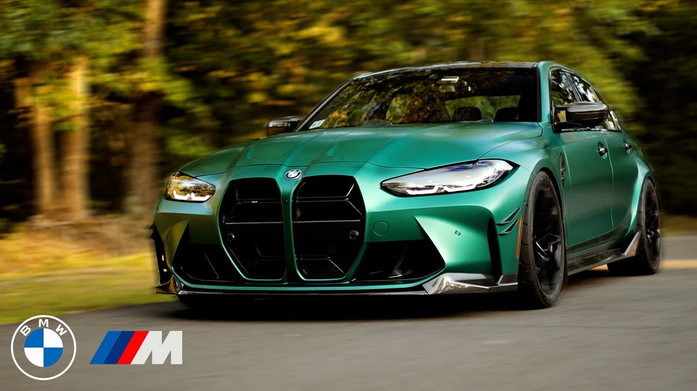

 Primeiro BMW M3 estabeleceu um novo padrão pelo qual os outros fabricantes de automóveis se baseariam e, depois de cinco gerações do modelo, o M3 ainda é referência nos dias de hoje. A BMW Motorsport, precursora da divisão BMW M, foi extremamente rigorosa no que diz respeito à tecnologia automotiva aplicada no desenvolvimento da primeira geração do BMW M3. Os esforços deram origem a um carro esportivo de alto desempenho baseado no BMW Série 3, já produzido em larga escala e adequado ao uso diário. Ao longo das três décadas seguintes, a BMW M refinou sua pioneira e mais bem-sucedida criação, de geração em geração, sempre com o cuidado de preservar as características originais do M3. O resultado disso é que, até hoje, não há outro automóvel que combine de maneira tão afinada o DNA esportivo, a praticidade diária e a emoção na condução em um pacote tão completo quanto este.